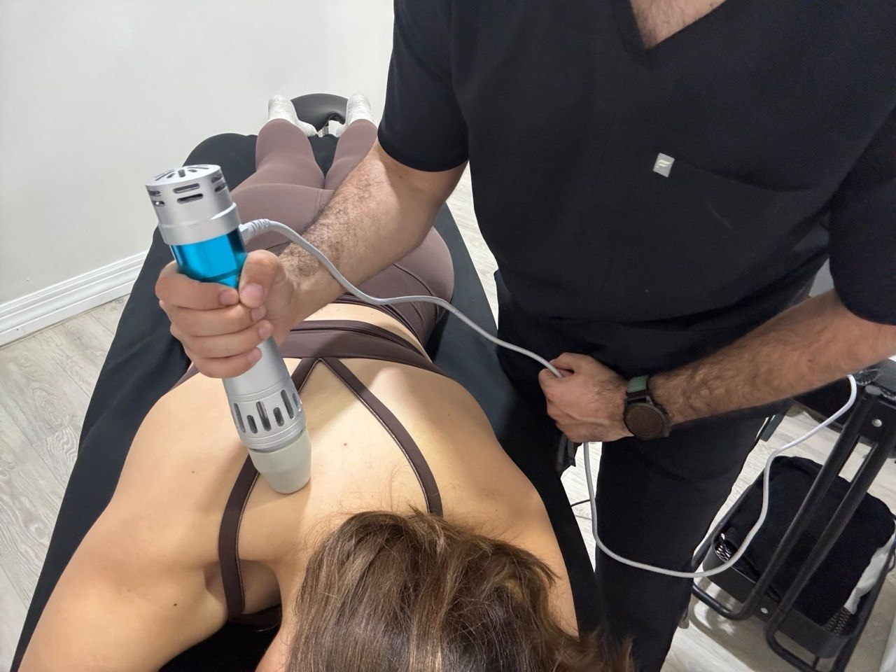
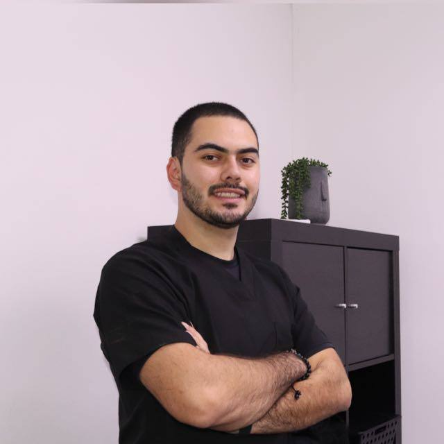
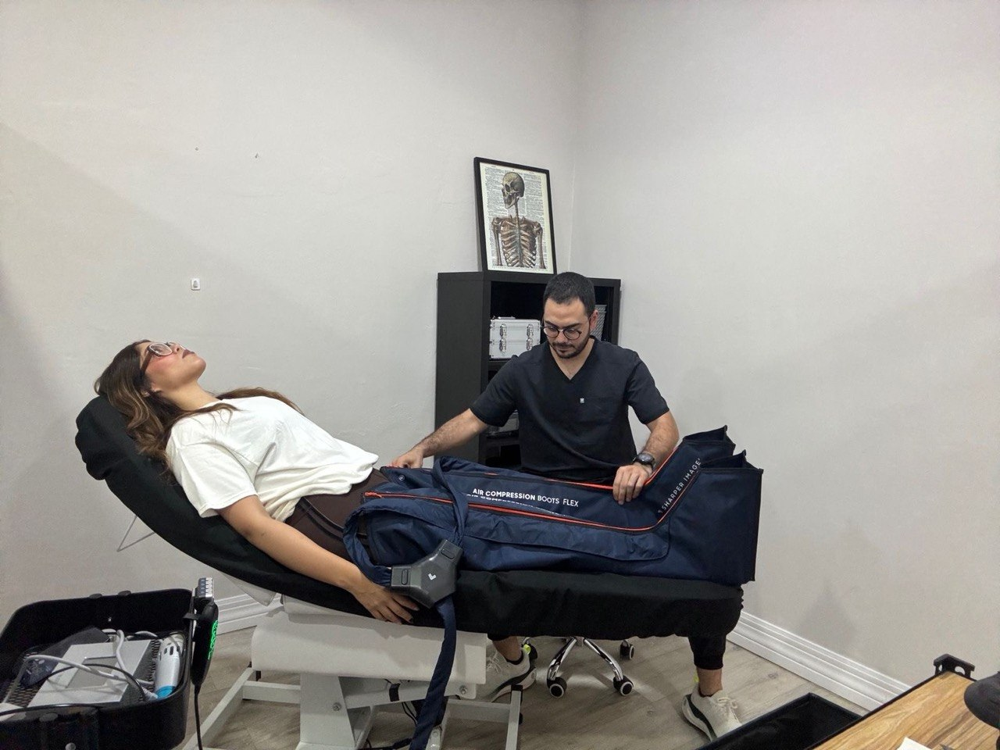
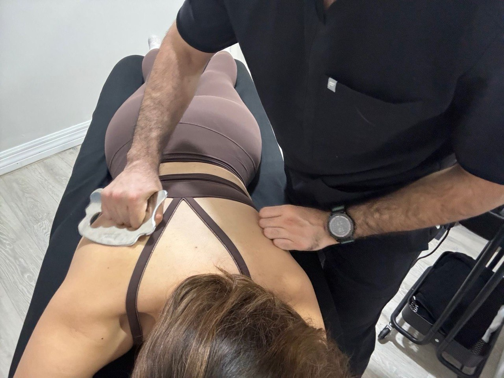

Diagnostico antes de intensidad
Primero entendemos que limita tu movimiento. Despues definimos la carga que si te ayuda.
Hero · The Declaration
Zona Rio, Tijuana · Leonardo Machado
Rehabilitacion de rendimiento para personas activas, atletas y pacientes que no buscan solo bajar el dolor, sino volver a entrenar, trabajar y moverse con confianza.

Valoracion + tratamiento + siguientes pasos claros.
1 · The Indictment
Muchos pacientes llegan despues de escuchar variaciones de lo mismo: descansa, deja de cargar, evita el movimiento, baja expectativas. Eso puede bajar riesgo en una etapa puntual, pero no es una estrategia completa de recuperacion.
PhysioPro no trabaja contra la medicina ni contra el criterio clinico. Trabaja contra la idea de que la rehabilitacion debe terminar cuando apenas baja el dolor. El objetivo es avanzar hacia funcion, capacidad y confianza.
2 · Movement Is Medicine
El tratamiento no se queda en aliviar sintomas. Se usa la evaluacion para decidir que movimiento recuperar, que capacidad reconstruir y como avanzar sin improvisacion.
Primero entendemos que limita tu movimiento. Despues definimos la carga que si te ayuda.
Bajar dolor importa, pero la meta es recuperar tolerancia, fuerza y control para volver bien.
Sin protocolos genericos. Cada decision del plan debe tener una razon y un siguiente paso claro.
3 · From Pain To Performance
Movimiento, dolor, historial, carga actual y objetivo. La primera sesion empieza aqui.
Intervencion dirigida a lo que encontramos, no a una rutina estandar que se repite igual para todos.
Recuperamos fuerza, rango, control y tolerancia de carga con progresion estructurada.
Entrenamiento, deporte, trabajo y vida diaria con criterios mas claros que solo "ya no duele".

4 · Meet Leonardo
"Salir del dolor importa. Pero el trabajo completo es ayudarte a volver a cargar, entrenar, moverte y confiar otra vez en tu cuerpo."
PhysioPro esta pensado para pacientes que quieren una evaluacion seria, un plan comprensible y una progresion real. Leonardo trabaja la rehabilitacion como proceso clinico con direccion, no como sesiones aisladas sin continuidad.
Zona Rio, Tijuana · Jose Maria Velazco 2632, Zona Urbana Rio Tijuana, 22010 Tijuana, B.C.
5 · What You Want Back
6 · Proof / Results
Esta version V3 no mostrara testimonios inventados ni resultados de ejemplo. Los casos y testimonios publicos de PhysioPro se agregaran cuando existan activos reales, verificados y autorizados para publicacion.
Prueba publica pendiente de documentacion interna y permisos de uso.
7 · Inside PhysioPro


Atencion privada, proceso claro y una mezcla de criterio clinico con trabajo de movimiento.
Lo que todavia falta para la version visual final son activos con personas en movimiento y prueba documentada de retorno.
8 · Before You Decide
Si. La primera sesion incluye evaluacion clinica, intervencion y una ruta clara de siguientes pasos.
Eso puede ser parte de una etapa, pero no siempre debe ser el final del proceso. Aqui buscamos cuando y como volver a cargar con mejor criterio.
Si. El enfoque se adapta al caso, pero siempre con una progresion clinica hacia funcion, movimiento y confianza.
Depende de tu condicion, historial y objetivo. Despues de la primera sesion te damos una estimacion honesta, no un paquete sin contexto.
9 · Location
Jose Maria Velazco 2632, Zona Urbana Rio Tijuana, 22010 Tijuana, B.C.
Lun-Vie · 8:00 - 20:00
Primera sesion · $750 MXN con valoracion + tratamiento.
Ver en Google Maps10 · Final CTA
La ruta principal de PhysioPro es directa: agenda por WhatsApp, cuentanos tu caso y coordinamos tu primera evaluacion.
11 · Lead Capture / WhatsApp Fallback
El formulario conserva la misma logica actual: al enviarlo se abre WhatsApp con tu informacion para coordinar la primera sesion.